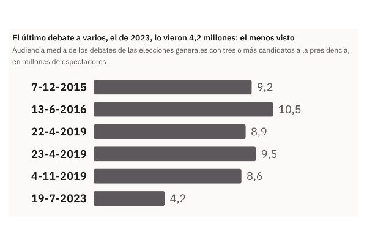

Actualidad · Encuestas de hoy · España
Encuestas elecciones generales 2026, hoy 18 de noviembre: el PSOE, a dos puntos o menos del PP
40dB. da al PP el 32,2 % y al PSOE el 30,7 %; Sondaxe, el 29,0 % y el 27,0 %. La mediana de las encuestas los separa 4,5 puntos.
Por Nacho G. del Álamo · · Actualizado el
Cada párrafo lleva una etiqueta: dato (cifra comprobable con las fuentes), patrón (relación que se repite, sin afirmar la causa), hipótesis (explicación posible, sin dos fuentes independientes) o contexto (hechos y declaraciones publicados por otros, enlazados). Cómo verificamos
DatoLas dos encuestas de las elecciones generales fechadas este miércoles, 18 de noviembre, dejan al PSOE a dos puntos o menos del PP. El tracking de 40dB. para El País y la SER da al PP el 32,2 % y al PSOE el 30,7 %, 1,5 puntos de distancia; el de Sondaxe para La Voz de Galicia, el 29,0 % y el 27,0 %, 2,0 puntos. Vox va en direcciones opuestas: baja al 17,0 % en 40dB. y sube al 19,4 % en Sondaxe. En escaños, PP y Vox suman 188 en 40dB., contando los 2 de UPN-PP como hace Sondaxe, y 192 en Sondaxe, por encima de la mayoría absoluta de 176.
40dB. · El País / Cadena SER · 18 nov
Cambio frente a su encuesta del 17 nov
Sondaxe · La Voz de Galicia · 18 nov
Cambio frente a su encuesta del 17 nov
DatoEn Sondaxe, el PP baja 0,7 puntos respecto a su entrega anterior y el PSOE sube 0,3: la distancia entre los dos pasa de 3,0 a 2,0 puntos, la más corta que ha dado Sondaxe desde las generales de 2023. Vox sube 1,4 puntos, hasta su dato más alto en la misma serie. Sondaxe da al PP 121 escaños, al PSOE 111 y a Vox 71. El trabajo de campo se hizo del 12 al 16 de noviembre, con 1.000 entrevistas por teléfono y en línea, según la ficha que recoge Electográfica. La Voz de Galicia lo adelantó en su web el martes por la noche.
Dato40dB., con 2.000 entrevistas en línea del 13 al 17 de noviembre, da al PP 131 escaños, al PSOE 122 y a Vox 55, según su informe, que da aparte los 2 de UPN-PP. Vox baja por quinta entrega seguida y pierde 3 diputados en un día. Lo contamos con más detalle en la pieza sobre el tracking de 40dB. de hoy.
Frente a la mediana de las encuestas
DatoLas dos ven la carrera más ajustada que la mayoría. La mediana de la última encuesta de cada una de las 18 encuestadoras de las tres últimas semanas, la que resume nuestra página de encuestas de las elecciones generales 2026, da al PP el 31,4 %, al PSOE el 26,9 % y a Vox el 18,8 %: 4,5 puntos entre PP y PSOE. Esa mediana es la de la última actualización automática de la página, de primera hora de este miércoles, y todavía no incluye la Sondaxe de hoy.
Ver la tabla
| PP | PSOE | Vox | Ventaja del PP | |
|---|---|---|---|---|
| Sondaxe | 29,0 | 27,0 | 19,4 | 2,0 |
| 40dB. | 32,2 | 30,7 | 17,0 | 1,5 |
| Mediana | 31,4 | 26,9 | 18,8 | 4,5 |
Lo que estas encuestas no dicen
ContextoLas dos son trackings: cada día suman las entrevistas de los últimos cinco días y cambian la más antigua por la más reciente, así que una entrega comparte casi todas sus entrevistas con la anterior. Frente a su última encuesta sin días de campo en común, la del 2 al 4 de noviembre, Sondaxe da a Vox 0,8 puntos más, dentro del margen de error de la diferencia, de unos ±3,4 puntos. Con 1.000 entrevistas, el margen de cada porcentaje de Sondaxe es de ±3,1 puntos; el de 40dB., de ±2,2.
ContextoEsta pieza recoge las encuestas publicadas hasta las 15.00 de este miércoles. Las que salgan esta noche llegarán a la página de encuestas con su actualización automática. La ley prohíbe publicar encuestas desde el martes 24 de noviembre.
Preguntas frecuentes
¿Qué encuestas de las elecciones generales hay hoy, 18 de noviembre?
Dos: el tracking de 40dB. para El País y la SER (PP 32,2 %, PSOE 30,7 %, Vox 17,0 %) y el de Sondaxe para La Voz de Galicia (PP 29,0 %, PSOE 27,0 %, Vox 19,4 %), hasta las 15.00.
¿Quién gana las elecciones generales según las encuestas de hoy?
El PP, en las dos, por 1,5 puntos en 40dB. y por 2,0 en Sondaxe. PP y Vox suman mayoría absoluta en las dos: 188 escaños en 40dB. y 192 en Sondaxe, con UPN-PP incluido.
¿Qué dice la mediana de las encuestas?
La mediana de las 18 encuestadoras de las tres últimas semanas da al PP el 31,4 %, al PSOE el 26,9 % y a Vox el 18,8 %. Está en mapaelectoral.es/encuestas.
Encuestas elecciones generales 2026 · El tracking de 40dB. de hoy · Cuánto discrepan las encuestas · Las encuestas, semana a semana
Método y fuentes
- Qué se compara
- Las encuestas de las elecciones generales publicadas el 18 de noviembre de 2026 (40dB. para El País y la SER y Sondaxe para La Voz de Galicia), cada una frente a su entrega anterior y frente a la mediana de la última encuesta de cada encuestadora de las tres últimas semanas, la de mapaelectoral.es/encuestas.
- Límites
- Las dos son trackings: cada entrega comparte casi todas sus entrevistas con la anterior, así que el cambio de un día a otro no es una medición independiente. Los márgenes de las diferencias suponen muestreo aleatorio simple y solo se calculan entre encuestas sin días de campo en común. La mediana es la de la actualización de primera hora y aún no incluye la Sondaxe del día. Recoge las encuestas publicadas hasta las 15.00.
- Cómo se calcula
- Ventaja del PP: estimación del PP menos la del PSOE, en puntos. Mediana: mapaelectoral.es/encuestas a 18 de noviembre (encuestas/src/construir.py, medianas()). Margen de la diferencia: dos errores típicos, raíz de p1·(1 − p1)/n1 + p2·(1 − p2)/n2. Script: actualidad/src/resumenes/encuestas_hoy.py. Cifras reproducibles con los scripts del expediente de la pieza. Metodología de Actualidad · Metodología del Atlas
- Fuentes
- El País, tracking de 40dB. (18-11-2026)
- 40dB. para El País y la SER, tracking de campaña, día 6 (informe)
- La Voz de Galicia, tracking de Sondaxe (web, 17-11-2026, 20.54; edición del 18-11-2026)
- Electográfica, Sondaxe para La Voz de Galicia (18-11-2026)
- Wikipedia, Opinion polling for the 2026 Spanish general election (CC BY-SA 4.0)
- Mapa Electoral, encuestas de las elecciones generales 2026
- Autoría
- Nacho G. del Álamo
- Revisión de datos y texto
- Nacho G. del Álamo, 18 de noviembre de 2026
- Publicado · actualizado
- 18 de noviembre de 2026 · 18 de noviembre de 2026, a las 15.00
- Correcciones
- Ninguna.
Serie «Camino al 29N»: 156 piezas
- El mapa electoral de Cantabria: sin el PRC en la papeleta, el PP pasó de 55 a 85 municipios y ganó El Astillero por 5 votos
- El mapa electoral de Ceuta y Melilla: Vox pasó de ganar 32 secciones de Ceuta a ninguna, y 13 de las 17 de Coalición por Melilla fueron al PSOE
- Los once municipios que visitan los candidatos el primer día de campaña, fuera de Madrid y Barcelona, cambiaron de ganador entre 2019 y 2023
- Dos de los cuatro del debate de laSexta no se presentan el 29N: ni Cuerpo ni Bustinduy están en ninguna lista
- De los 25 convocados de De la Fuente nacidos en España, 15 nacieron donde ganó el PSOE en 2023 y 8 donde ganó el PP; en Puente Genil, el PP ganó por 31 votos
- Feijóo hace campaña con UPN en Pamplona, donde el PSOE ganó 77 de las 151 secciones en 2023; con UPN y PP sumados, se habría quedado en 49
- Al PP le faltaron 9.793 votos en 2023 para recuperar un diputado en Gipuzkoa; Feijóo arropa hoy a su candidato, atacado en Hernani
- Si la abstención fuera un partido, en 2023 habría quedado por delante del ganador en más de la mitad de las grandes ciudades y en la mitad de las secciones de España
- Voto por correo para las elecciones generales del 29N: el plazo para pedirlo acaba el jueves 19; en 2023, una de cada tres solicitudes llegó en las dos últimas semanas
- Elecciones generales: una de cada tres secciones cambió de ganador entre 2019 y 2023
- Estás aquíEncuestas elecciones generales 2026, hoy 18 de noviembre: el PSOE, a dos puntos o menos del PP
- Debate Sánchez Feijóo: hora, dónde verlo y quién gana el cara a cara
- Elecciones generales: en Gijón, Vox sacó en 2023 su mejor resultado en Somió, el barrio más rico: 17,0 %
- Veda de encuestas: hasta cuándo se pueden publicar las del 29N
- Cómo votar en las elecciones generales del 29N: horario, qué llevar y cómo saber tu colegio
- A qué hora se sabrán los resultados de las elecciones generales del 29N
- Encuestas Andorra 29N: qué son las encuestas prohibidas y qué dice la ley
- Después de las elecciones generales del 29N: cuándo se constituyen las Cortes y los plazos de la investidura
- Elecciones generales del 29N en cifras: electores, escaños, candidaturas y mesas de cada provincia
- Escrutinio de las elecciones generales del 29N: cómo seguirlo en directo y cuándo es definitivo
- Ver las 156 piezas de la serie
Sigue leyendo
 Los pueblos que siempre aciertanLos pueblos que siempre aciertan se juegan la racha por un puñado de votos: en Ayerbe, el PP ganó en 2023 por 2
Los pueblos que siempre aciertanLos pueblos que siempre aciertan se juegan la racha por un puñado de votos: en Ayerbe, el PP ganó en 2023 por 2
El debate a cuatroDebate a cuatro: hora, dónde verlo y en qué orden hablan Sánchez, Feijóo, Abascal y Colau Camino al 29NVoto en blanco y voto nulo en las elecciones generales del 29N: qué cuenta y a quién afecta
Camino al 29NVoto en blanco y voto nulo en las elecciones generales del 29N: qué cuenta y a quién afecta Camino al 29NEscrutinio de las elecciones generales del 29N: cómo seguirlo en directo y cuándo es definitivo
Camino al 29NEscrutinio de las elecciones generales del 29N: cómo seguirlo en directo y cuándo es definitivo Camino al 29NElecciones generales del 29N en cifras: electores, escaños, candidaturas y mesas de cada provincia
Camino al 29NElecciones generales del 29N en cifras: electores, escaños, candidaturas y mesas de cada provincia Camino al 29NDespués de las elecciones generales del 29N: cuándo se constituyen las Cortes y los plazos de la investidura
Camino al 29NDespués de las elecciones generales del 29N: cuándo se constituyen las Cortes y los plazos de la investidura